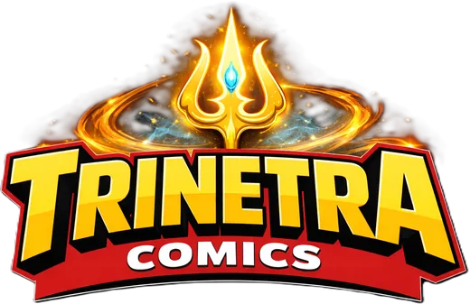
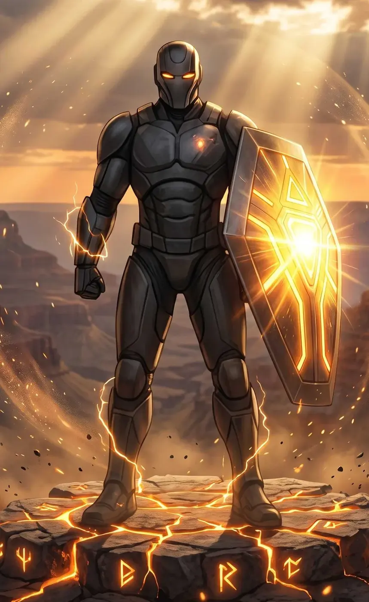
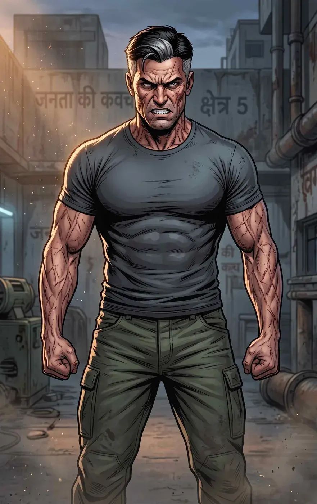
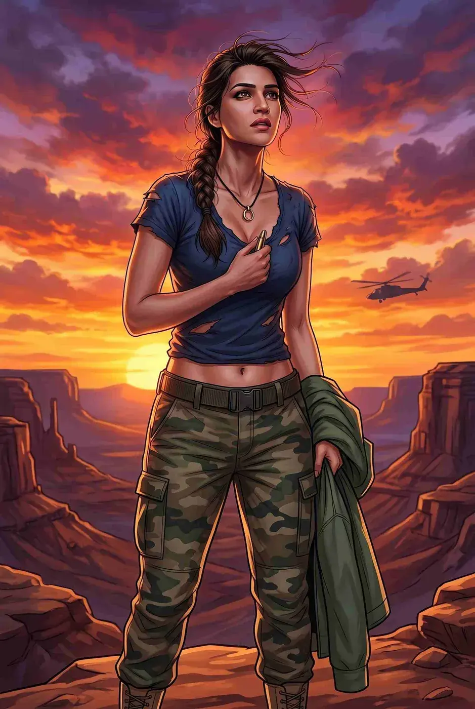
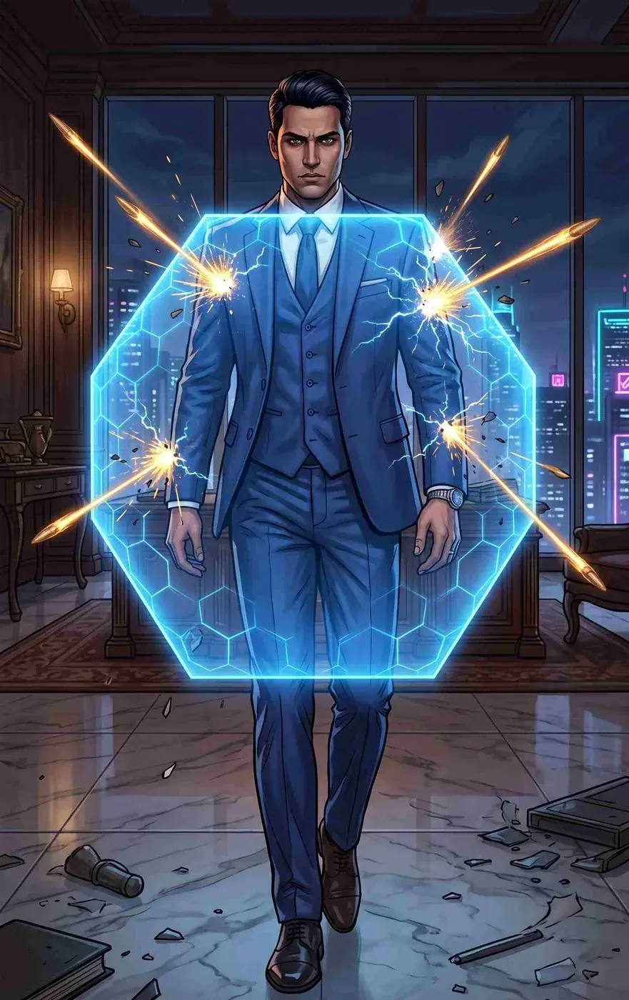
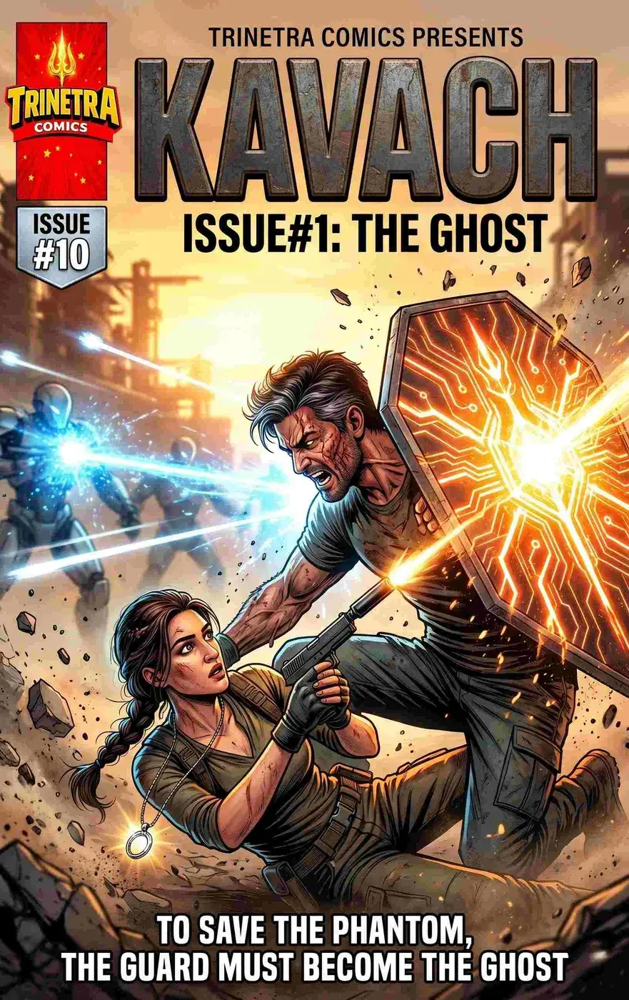
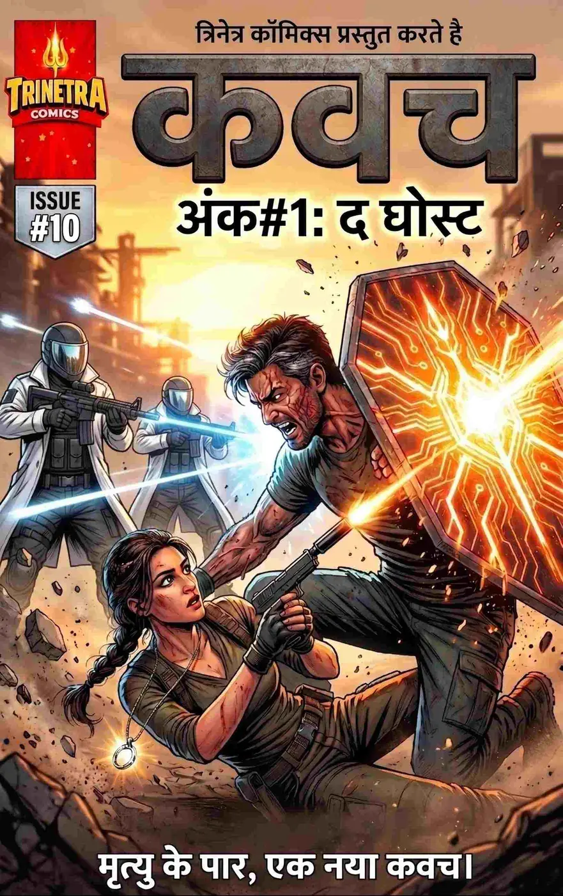

Kinetic Energy Absorption & Redirection
Kavach absorbs kinetic and energy-based trauma through the fusion of ancient Trinetra alloy and advanced technology, charging his systems for devastating shockwaves and explosive physical attacks.


THE GHOST
THE GHOST
Major Shaurya Pratap survived a devastating blast only to be reborn as Kavach, a high-tech stealth operative and guardian. Armed with his kinetic-absorbing Akhanda shield, he fights from the shadows under the strict Ghost Protocol while protecting Ananya from afar.
Kavach absorbs kinetic and energy-based trauma through the fusion of ancient Trinetra alloy and advanced technology, charging his systems for devastating shockwaves and explosive physical attacks.
The Trinetra alloy bonding allows his body to withstand tremendous physical punishment.
A battle-hardened commando trained to dominate close-quarters combat.
Expert in black-ops infiltration, HALO jumps and silent night assaults.
Endures brutal physical therapy to keep his traumatized body operational.
Can throw and magnetically recall his shield in chaotic combat.
A massive hexagonal oxidized-iron kinetic battery that absorbs energy and pulses with orange Trinetra circuitry.
Used for tactical evasion and maintaining his Ghost status.
Specialized brass casings from Shaurya’s past that serve as a tactical calling card.
His enduring love for Ananya can make him break protocol.
He requires ongoing physical therapy after the Thar Desert blast.
Ghost Protocol severely limits his personal agency.
Rugged, battle-hardened Indian man with a rigid military posture, iron-grey streaks in dark hair and a jagged burn scar on his left jaw.
A sleek matte-black military superhero suit over charcoal-grey ballistic weave, with a predatory stealth cowl and angular gunmetal ballistic faceplate with glowing amber ocular slits.

THE PERSON BEHIND THE HERO
Legally dead and hidden from the world, Shaurya lives through brutal rehabilitation in a subterranean military bunker. The man beneath Kavach is still a soldier bound by duty, memory and the Ghost Protocol.

SUPPORTING CHARACTER
Shaurya’s former squadmate and love. A lethal tactical operative relentlessly hunting the OMEGA syndicate for answers.

SUPPORTING CHARACTER
An elite OMEGA lieutenant whose bio-weaponized technology makes the syndicate’s hierarchy terrifyingly difficult to defeat.
Major Shaurya Pratap survived a devastating blast only to be reborn as Kavach, a high-tech stealth operative and guardian. Armed with his kinetic-absorbing Akhanda shield, he fights from the shadows under the strict Ghost Protocol while protecting Ananya from afar.

Issue #1 / English
Explore the dedicated issue page, story profile and four-page free preview.
VIEW ISSUE
Issue #1 / Hindi
Explore the dedicated issue page, story profile and four-page free preview.
VIEW ISSUE